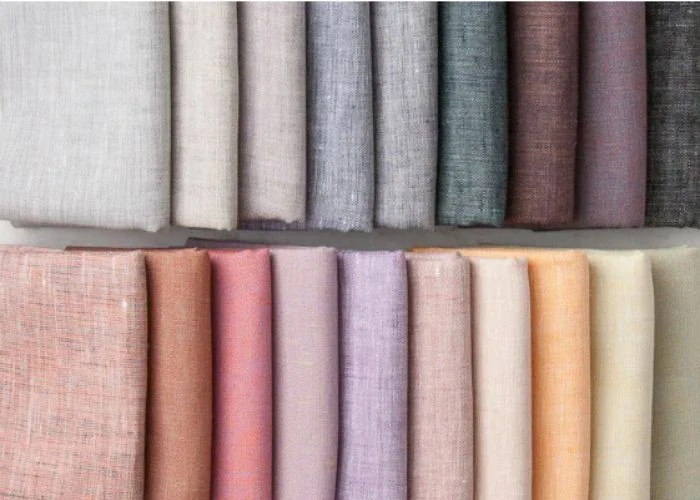
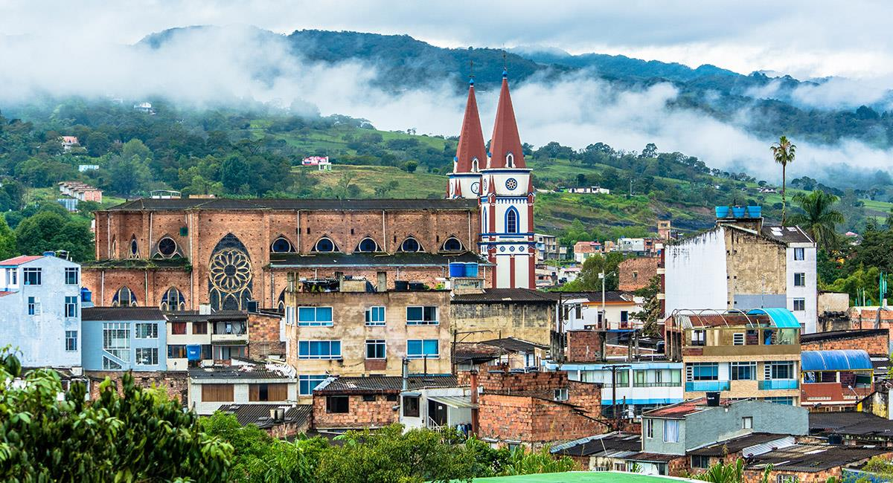

Nuestra historia
Nuestro origen
Ámonic nace en Moniquirá, Boyacá, un territorio lleno de naturaleza, tradición y riqueza cultural.
Desde sus comienzos, la marca surge con una idea clara: demostrar que la moda puede contar una historia. Una historia sobre nuestras raíces, nuestros paisajes y aquellos elementos que hacen único a nuestro territorio.
En Ámonic tomamos la inspiración de nuestro entorno y la transformamos en prendas contemporáneas, buscando un equilibrio entre elegancia, comodidad, identidad y simplicidad.

La Flor de la Guayaba
Uno de los pilares más importantes de Ámonic es la flor de la guayaba, símbolo oficial de la marca y elemento que sintetiza nuestra filosofía de diseño.
Fue elegida porque representa las raíces de Moniquirá, municipio reconocido por la producción de guayaba. Sin embargo, para nosotros va mucho más allá: simboliza el crecimiento, la belleza natural, la renovación y la conexión profunda con la tierra. Su delicadeza inspira nuestros bordados, patrones gráficos e ilustraciones.
"Es el hilo conductor de toda nuestra comunicación visual y textil, aportando exclusividad y coherencia a cada colección."
Sello de Identidad Y Origen
Ilustraciones lineales de flores, hojas y brotes transformadas en prendas contemporáneas con elegancia y sutileza.

Nuestra Misión
Misión: Preservar la identidad cultural, resaltar la riqueza natural del territorio y proyectar el talento colombiano hacia nuevos mercados, creando moda elegante, atemporal y auténtica.
A través de nuestro sistema gráfico, estos cuatro pilares se plasman en detalles únicos que le otorgan alma y propósito a cada diseño.
Nuestra forma de diseñar
En Ámonic creemos que menos puede ser más.
Diseño moderno, limpio y funcional.
Detalles inspirados en la cultura boyacense, la naturaleza y la flor de la guayaba.
Así conseguimos que nuestras prendas tengan identidad sin perder su elegancia ni convertirse en diseños demasiado recargados.


Nuestra Visión
Visión: Posicionarnos como una marca referente de moda colombiana, reconocida por su diseño contemporáneo, su calidad superior y sus procesos de producción responsables a nivel nacional e internacional.
Nuestra intención es que cada prenda sea más que una pieza de vestir: que lleve consigo una parte del lugar que inspiró su creación.
Por eso apostamos por diseños atemporales, materiales de calidad y una producción responsable, buscando también apoyar el trabajo de talleres y artesanos locales.
Nuestros Valores Corporativos
Identidad
Inspiración profunda en Moniquirá, Boyacá, y respeto genuino por nuestras raíces.
Elegancia
Simplicidad, equilibrio visual, líneas limpias y diseño atemporal sofisticado.
Naturaleza
La flor de la guayaba como símbolo constante de renovación, belleza y conexión.
Calidad
Uso de fibras naturales superiores (como el lino) y precisión artesanal en los acabados.
Sostenibilidad
Consumo consciente, producción responsable y apoyo a los talleres y artesanos locales.
Vestimos nuestras raíces
para llevarlas hacia el futuro.
Ámonic
Moda colombiana inspirada en nuestra tierra.
Elegancia con raíces